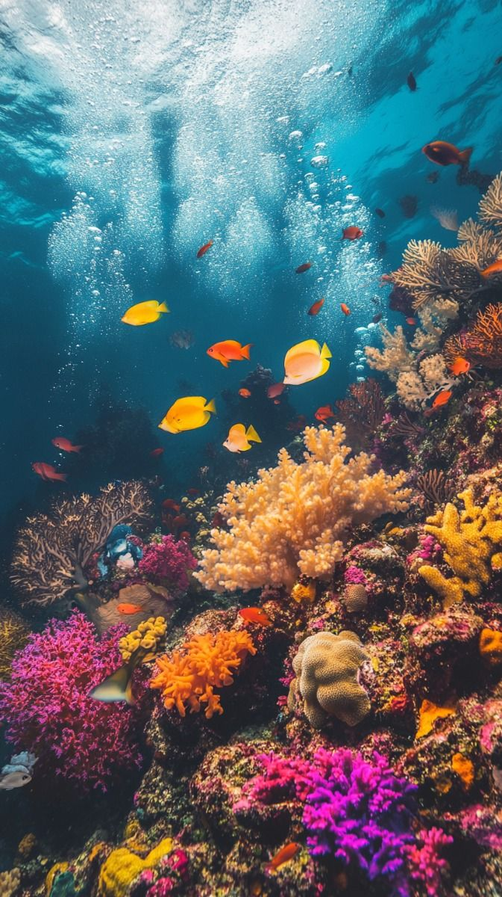
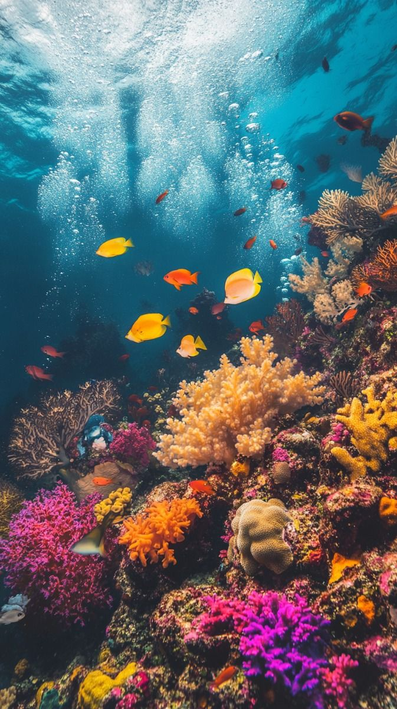

Raja Ampat

Raja Ampat adalah kepulauan di Papua Barat yang terkenal dengan keindahan bawah lautnya. Surga bagi para penyelam, tempat ini memiliki keanekaragaman hayati laut yang luar biasa.

Raja Ampat adalah kepulauan di Papua Barat yang terkenal dengan keindahan bawah lautnya. Surga bagi para penyelam, tempat ini memiliki keanekaragaman hayati laut yang luar biasa.
